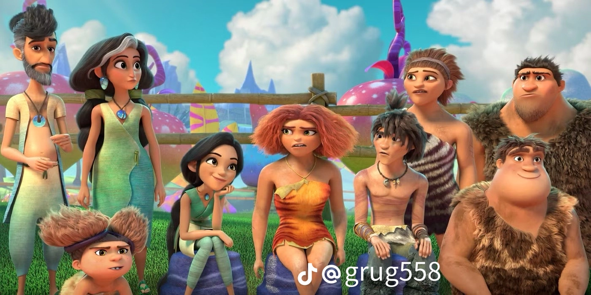

At first, the Betterman and the croods didn't get along very well because they had diffent ways of living. but eventually, both families learnt to accept each other and work together
The Betterman shows the importance of the family, friendship,cooperation and accepting diffences.
The croods learns the important lesson about love, courage, team work and adopting to change.
